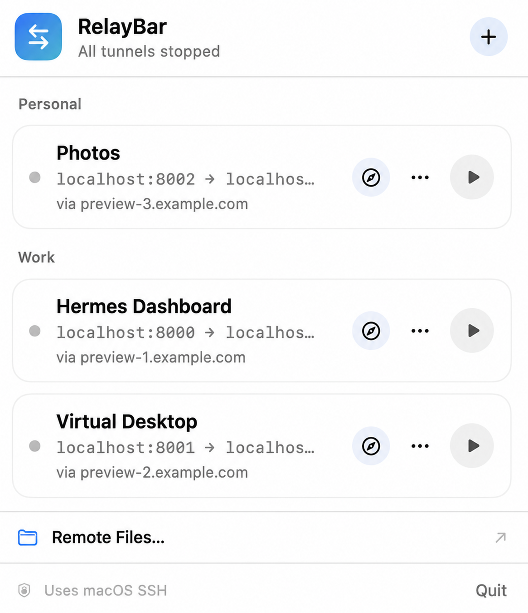

Open the exact path
Paste the result of remote pwd and RelayBar opens
that folder—without crawling the server.
A tiny native macOS menu-bar app. Paste an SSH command, get a saved profile—local, SOCKS, remote, and Unix-socket rules over one managed connection.
Free · Apple notarized · macOS 13+ · No accounts · No analytics
ssh -N -L 3000:127.0.0.1:3000 -D 1080 devbox.local

Your config, keys, known hosts, and agent stay untouched.
No Electron, no background service, no replacement SSH stack.
No account, analytics SDK, or cloud sync phones home.
Paste an absolute remote path, choose a saved SSH connection, and open exactly that folder. No indexing. No sync engine. Just SFTP through the SSH setup you already trust.

Paste the result of remote pwd and RelayBar opens
that folder—without crawling the server.
Read supported images and Markdown in a bounded, inert preview. Raw HTML and remote embeds stay off.
Transfer files or folders, watch progress, cancel cleanly, and reveal the result in Finder.
RelayBar parses typed forwarding arguments without invoking a shell, turns them into a visible profile, and keeps the controls in your menu bar.
Import repeated or mixed -L, -D,
and -R rules.
Name the profile, check each typed endpoint, and optionally place it in a group.
Start, stop, retry, and open supported endpoints without keeping a Terminal tab around.

Version 1.2.0 turns a simple local-forward tool into a structured SSH workspace while keeping every boundary visible.
Repeated and mixed local, SOCKS, remote, TCP, and Unix-socket forwarding rules share one managed SSH connection.
Organize profiles into lightweight menu sections. Move, rename, or ungroup them without restarting active SSH processes.
Browse, refresh, preview, download, cancel, and reveal files through saved SSH connections.
Structured parsing, fixed executable arguments, safer process cleanup, and a signed, notarized, stapled universal app.
RelayBar manages visible typed forwarding rules over one SSH connection per profile. It doesn’t add an account, analytics SDK, background service, or replacement SSH stack.
It runs /usr/bin/ssh and /usr/bin/sftp
directly, so your existing config, keys, known hosts, and SSH agent
remain the source of truth.